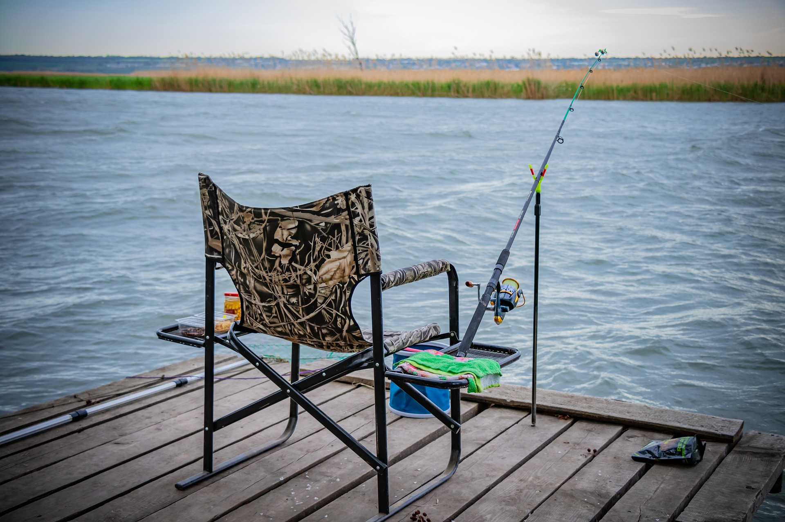

Как правильно выбрать место
Изучив советы, как правильно выбрать место для рыбалки, можно определить, какой регион улова будет подходящим.
- Для этого важно учесть факторы:
- Тип отлавливаемой рыбы. Хищные и крупные рыбы водятся не во всех водоемах, тогда как распространенного окуня можно встретить практически на каждом водоеме.
- Вид рыбалки. Будет это рыбалка с берега, с лодки или подводная охота.
- Цель рыбалки. Помимо улова рыбы, многие отправляются на пикник, прогулку или промысловую охоту.
- Правила отлова рыбы. Рыбачить следует только в отведенной зоне без использования запрещенных браконьерских предметов.
- Сезон. В зависимости от сезона зима-лето будет зависеть экиаировка рыбака и отлавливаемая рыба.
- Продолжительность рыбалки и опыт. Отправляясь на воду, не забудьте взять навигатор и эхолот. Для рыбалки с берега будет достаточно качественной снасти. Зимняя ночная рыбалка не приемлема без палатки и средств обогрева.
- Техника рыбной ловли. Ручное закидывание удочки наиболее распространено среди большинства рыбаков. Траловая рыбалка чаще встречается у жителей океанского побережья.